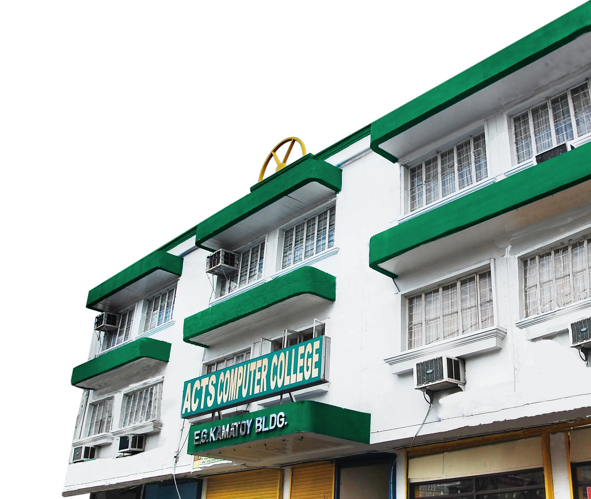

Quality Education
A curriculum aligned with national goals and global standards.
Quality Senior High and college education in Sta. Cruz, Laguna since 1987 — a Christian community shaping minds and hearts.

ACTS Computer College has established its great reputation providing excellent services and quality education for free and affordable opportunities. The institution offers both programs for Senior High School and College with its excellent Christian culture shaping not only minds but hearts of every ACTS student.
A curriculum aligned with national goals and global standards.
Instructors who are seasoned professionals dedicated to student success.
Air-conditioned, multimedia-ready classrooms and updated computer labs.
BSIT, BEED, BSED, BSEntrep, and more across SHS and college levels.
Established in 1987 as the first computer school in Sta. Cruz, Laguna.
Senior High is free. College is affordable. Both are built on the same Christian culture, high standards, and care for every student.
Free, quality Senior High education taught by licensed professional teachers, with a Christian culture that supports students in the classroom and beyond.
Senior High registrationAffordable college programs taught by faculty with master's and doctoral degrees, across Computer Studies, Teacher Education, and Business Administration.
College registration
Welcome to ACTS Computer College — a place where passion meets purpose and learning transforms lives.
At ACTS, we don't just train minds — we mold leaders. ACTS is more than a school; it is a family grounded in faith, service, and excellence.
Let us journey together as we build brighter futures, one student at a time.
PROF. RUBEN F. MACALINAO, MBA, MM
President, ACTS Computer College
Over 4,000+ students have started their journey with us — you're next!
Whether it's admissions, scholarships, or your next big move — we're just a message away.